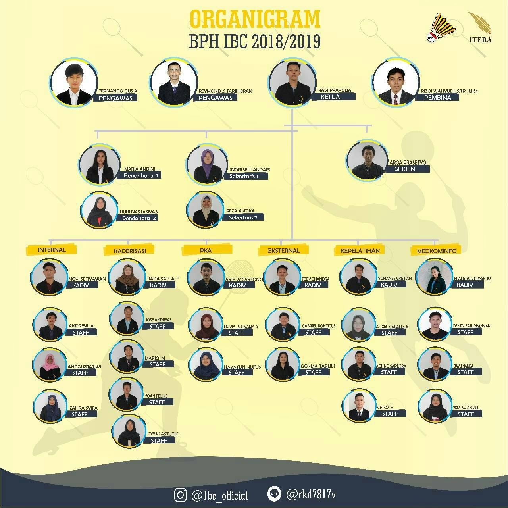

ORGANIGRAM

Badan Pengurus Harian
Badan Pengurus Harian(BPH) Itera Badminton Club terdiri dari :
- Pembina
- Pengawas
- Ketua
- Sekretaris Jendral (SekJen)
- Bendahara 1 dan Bendahara 2
- Sekretaris 1 dan Sekretaris 2
- Divisi Internal
- Divisi Kaderisasi
- Divisi Pengembangan Karakter Anggota (PKA)
- Divisi Eksternal
- Divisi Kepelatihan
- Divisi Medkominfo